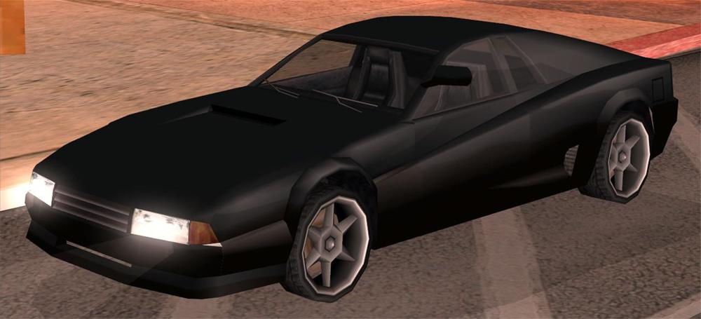
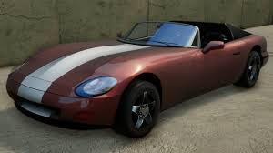
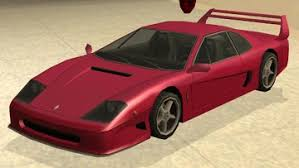
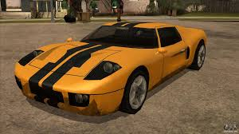

Top Picks
OS MELHORES
// ranking — eduardo pepes pankievicz
#1

INFERNUS
Pegassi · Supercar
230 km/h
Raro
RWD
Baseado na Ferrari Testarossa. O supercar mais icônico do GTA SA, favorito de quem quer velocidade pura.
#2

CHEETAH
Grotti · Supercar
233 km/h
Raro
RWD
Baseado na Ferrari F40. Ícone da série GTA, com visual agressivo e desempenho de respeito nas retas.
#3

BANSHEE
Bravado · Sports
220 km/h
Comum
RWD
Baseado no Dodge Viper. Conversível, rápido e fácil de encontrar em Rodeo, Los Santos. Clássico absoluto.
#4

TURISMO
Grotti · Sports
218 km/h
Incomum
RWD
Baseado na Ferrari 360 Modena. Elegante e veloz, aparece nas ruas de Las Venturas e San Fierro.
#5

BULLET
MTL · Supercar
240 km/h
Raro
RWD
Baseado no Ford GT. Um dos carros mais rápidos do jogo, encontrado em garagens de luxo em Las Venturas.
#6

HOTKNIFE
Classique · Hot Rod
170 km/h
Exclusivo
RWD
Hot Rod dos anos 30 exclusivo do GTA SA. Só aparece no Easter Basin, difícil de encontrar e incrível de dirigir.